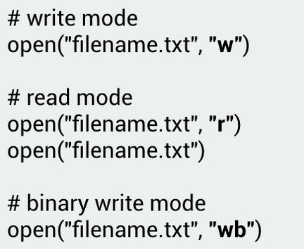

Lesson partially adapted from “Python File Handling: How to Create Text File, Read, Write, Open, Append Files in Python.” Guru99, www.guru99.com/reading-and-writing-files-in-python.html.
Python is capable of reading and writing to files without importing any libraries. However, working with files in Python is slightly different from working with programs like Microsoft Word or Excel.
In Windows, for example, a file can be any item manipulated, edited or created by the user/OS. That means files can be images, text documents, executables, and much more. Most files are organized by keeping them in individual folders. In Python, a file is categorized as either text or binary, and the difference between the two file types is important. Text files are structured as a sequence of lines, where each line includes a sequence of characters. This is what you know as code or syntax.
(“Reading and Writing Files in Python.” Python For Beginners, www.pythonforbeginners.com/files/reading-and-writing-files-in-python.)
Text files are the easiest to change in Python. But before a file can be edited, you must open it. In order to open a file for writing or use in Python, you must rely on the built-in open () function. The argument of the open function is the path to the file. If the file is in the current working directory of the program, you can specify only its name. An argument is nothing more than a value that has been provided to a function, which is relayed when you call it. So, for instance, if we declare the name of a file as “filename.txt,” that name would be considered an argument.
By adding a second argument to the open function, we can specify the mode:

Reading CSV files in Python